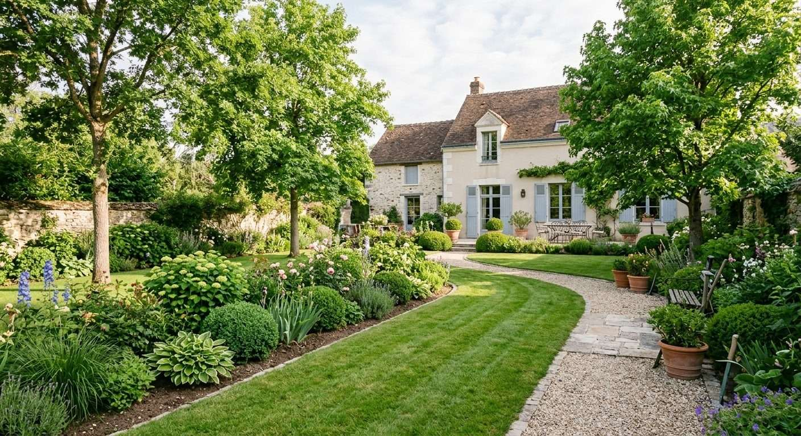
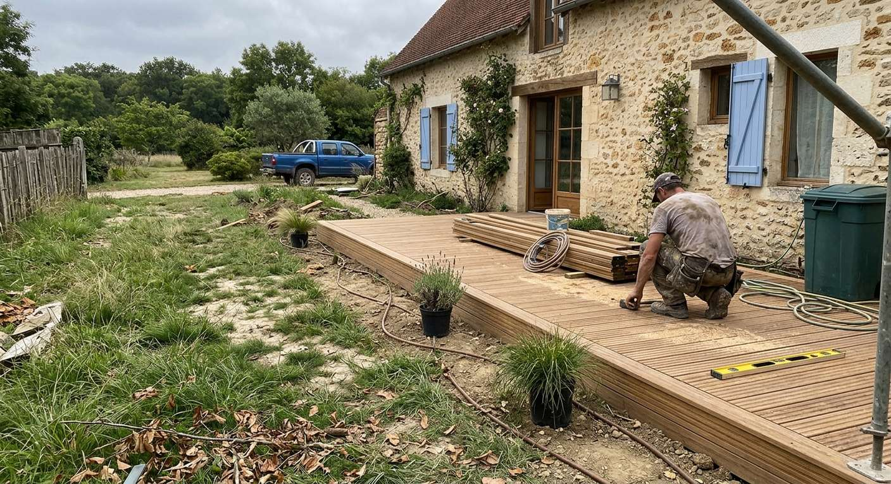
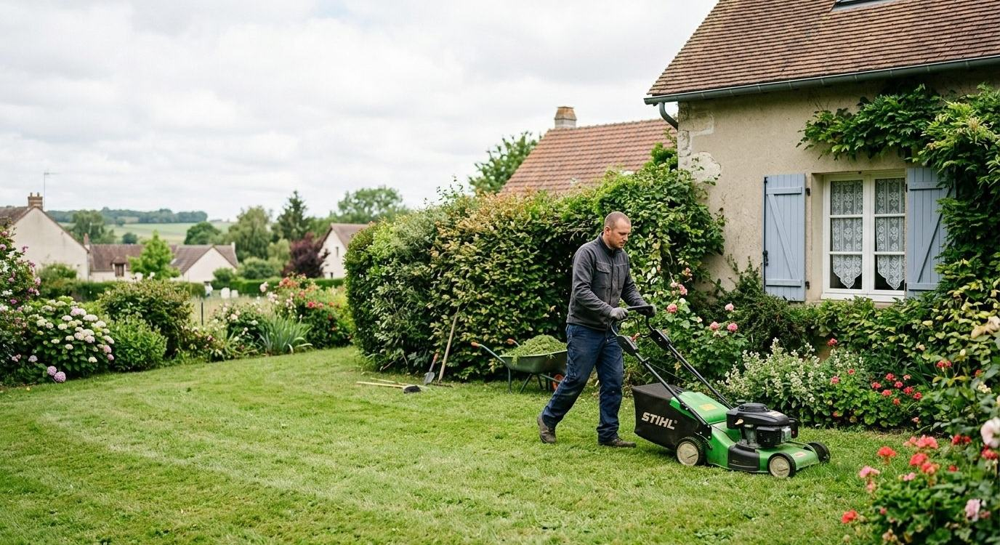

Prestations
Ce que nous pouvons aménager chez vous
Aménagement, création et entretien de jardins : les prestations se précisent selon votre terrain et vos usages.




Aménagement
Aménagement des extérieurs
Izi Garden vous accompagne pour aménager vos extérieurs. Le détail des travaux est précisé lors du devis.
- Projet défini avec vous
- Matériaux choisis ensemble
- Devis sur demande

Création
Création de jardins
Du projet à la réalisation, à partir de votre demande et de votre terrain.
- Projet défini avec vous
- Choix des végétaux
- Devis sur demande


Entretien
Entretien du jardin
Un suivi à définir ensemble selon votre jardin et votre besoin.
- Besoin défini avec vous
- Fréquence à convenir
- Devis sur demande
Un devis ?
Aménagement, création ou entretien : décrivez-nous votre idée
Quelques mots suffisent pour démarrer la discussion.